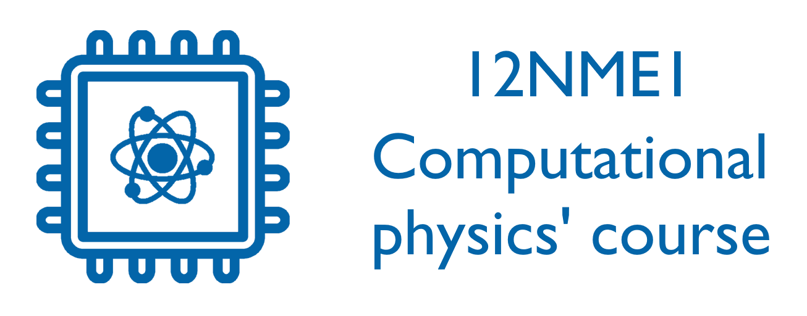

Numerické metody (NME1cv) - cvičení 2026#
Tyto stránky obsahují materiály ke cvičení předmětu 12NME1.
Materiály k přednášce najdete zde a další materiály ke cvičením zde.
Tyto materiály jsou z části převzaty z materiálů bývalých cvičících.
Rozvrh pro letní semestr 2025/2026#
Čtvrtek 14:00 - 15:40
Trojanova 13, učebna T-124
od 19.2. do 14.5., 13 lekcí
Podmínky udělení zápočtu#
max. 3 absence (+ možnost nahrazení 3 dalších absencí odevzdáním navíc: 1 domácí úlohy za každou dodatečnou absenci nebo odevzdáním vyplněného jupyter notebooku (vyřešené žlutě vyznačené úkoly) ze zameškané hodiny do následující hodiny - 1 týden na odevzdání), DOCHÁZKA
vypracování 4 domácích úloh: 2 úlohy z první půlky cvičení (témata 2-6), 2 úlohy z druhé půlky cvičení (témata 7-12)
na zkoušku je možné jít před udělením zápočtu v červnu, v září je již zápočet nutný obdržet před přihlášením na zkoušku!
Úkoly#
V kurzu je pro získání zápočtu potřeba odevzdat čtyři vypracované domácí úkoly, které budou zadány a vysvětleny na cvičeních. Domácí úlohy jsou dostupné na těchto stránkách.
Celkem bude zadáno 9 úkolů, jeden z každé kapitoly (kromě úvodní). Pro získání zápočtu vypracujte a odevzdejte alespoň čtyři vámi vybrané úkoly (výjimkou je poslední započtový úkol). Dva úkoly musí být z kapitol 2-6 a dva z kapitol 7-12! Nelze odevzdat všechny úkoly jen z první půlky cvičení.
Odevzdaný úkol musí být splňovat požadavky stanovené v zadání. Na odevzdání úkolů je libovolné množství pokusů. Pokud odevzdaný úkol nebude splňovat požadavky, pošlu vám ho na opravu zpět. Typicky vám okomentuji vaše řešení a poradím jak případné chyby opravit. Otázky k úkolům jsou samozřejmě vítány, ideálně na konci cvičení.
Úkoly odevzdávejte mailem. Nechte jméno jupyter notebooku stejné, pouze přidejte vaše jméno nakonec (příklad: 02-nelinearni-rce-UKOL_JiriLoffelmann).
Úkoly by měly být vaše samostatná práce. Spolupracovat je povoleno, ale je třeba zmínit ve vašem vypracování, s kým jste na úkolu spolupracovali!
Umělá inteligence#
Využití umělé inteligence je povoleno v souladu s řádem ČVUT. Tedy můžete používat těchto nástrojů pro pomoc s řešením, ale ne na vyřešení celého úkolu!
Příklady správného použití:
dotaz na dílčí krok úlohy - kterou a jak použít určitou knihovní funkci, jak napsat část kódu v pythonu (neznám syntax nebo nevím, jak přesně zapsat jednotlivé kroky algoritmu), atd.
dotaz k teorii související s úlohou - jaké jsou kroky daného algoritmu, matematické vzorce, vzdělání se ohledně vlastností metody/algoritmu, atd.
kód na vykreslování - zde lze použít umělou inteligenci na vygenerování celého kódu na vykreslení požadovaných grafů (ty pro nás slouží jako kontrola a vizualizace, nejsou přímou součástí hodnocení)
Příklad nesprávného použití:
zkopírování zadání a vložení jako dotaz k vyřešení umělé inteligenci
zkopírování části zadaní a vložení jako dotazu - měli byste sami formulovat dílčí části problému, se kterými chcete pomoc, využívat umělé inteligence pouze jako nástroje!
Deadline na všechny úkoly je do 30. června. Po tomto termínu vám úkoly stále opravím, ale může mi to trvat třeba 1-2 týdny (zvláště v červenci nebo v srpnu), než dostanete opravený úkol zpět. Počítejte s tím prosím dopředu, zejména pokud chcete dělat zkoušku v září! Na zkoušku není potřeba mít zápočet.
Používané nástroje#
programovací jazyk Python
prostředí Jupyter notebook (instalace popsána zde)
po proběhnutí cvičení naleznete doplněné notebooky na GitHubu (ve vrchním menu tlačítko )
po nějaké době (typicky v den následujícího cvičení) je aktualizována i webová stránka s vyplněným Jupyter notebookem
Obsah cvičení
Doporučená literatura#
[1] W. H. Press, B. P. Flannery, S. A. Teukolsky, V. H. Vetterling, Numerical Recipes: The art of scientific computing, Cambridge University Press, Cambridge, 3rd edition 2007.
[2] Materiály k ostatním cvičením a k přednášce
[3] Python Programming And Numerical Methods: A Guide For Engineers And Scientists
Vedení kurzu#
Tento kurz je veden skupinou Počítačové fyziky na KLFF, FJFI ČVUT. 